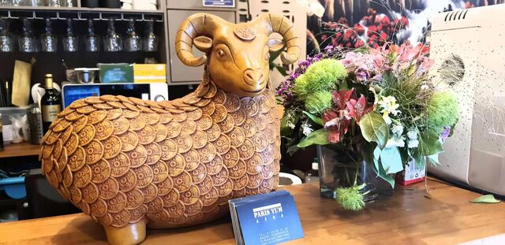

Restaurant asiatique & chinois · Paris 9ᵉ
Barbecue, fruits de mer et grandes spécialités chinoises, dans une ambiance chaleureuse au cœur de Paris.
三羊开泰
Découvrez nos spécialités, où chaque plat raconte une histoire de générosité et de partage.

À propos
Chez Paris Yum, on partage une cuisine asiatique et chinoise généreuse et parfumée, dans une salle climatisée et conviviale. Notre nom, 三羊开泰, est un vœu de prospérité et de renouveau — l'esprit que nous mettons dans chaque plat.
Brochettes grillées minute, fruits de mer, poissons et grandes spécialités du nord : une cuisine à partager entre amis ou en famille. Et pour faire la fête, place au karaoké et aux événements privés !
Infos & accès
Ouvert 7 jours / 7